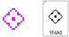

最新一期The Overflow（#255）推荐了How AI Stole the ✨ Sparkles ✨ Emoji，其中提到，许多表情源自日本漫画的表现手法，出口到Unicode后，因为文化不同，所以不能理解。
:diamond_shape_with_a_dot_inside:
上面这个字符来自最初加入Unicode的一批DoCoMo表情。Unicode码表对其补充说明如下。
Comic style symbols
1F4A0 💠 DIAMOND SHAPE WITH A DOT INSIDE
= kawaii, cute
• meaning of cuteness is based on association of glyph with shape of a flower
→ 27D0 ⟐ white diamond with centred dot
漫画风格符号 1F4A0 💠 内加点的菱形［注意diamond不译为钻石］ = 卡哇伊，可爱 • 可爱的含义是因为形状像花 → 27D0 ⟐ 带中心点的空心菱形［注意white不译为白色。码表凡例中，“→”表示任意链接，通常只是因为形状相似，与符号的含义无关］
A glyph that is used for kawaii in Japan, resembling the shape of a flower.
Google's design previously resembled a flower, while Samsung's previously displayed a white symbol on a blue square.
在日本表示卡哇伊的字形，形状像一朵花。
谷歌先前的设计仿照了花的样子，而三星以前显示的是白色符号叠在蓝色方块上。
可以看出该表情与钻石无关，应画作四瓣花的形状，DoCoMo原版字形（下图左）和Unicode参考字形（下图右，截至16.0版本）和也确实如此，且DoCoMo为该字符选用了粉色。
其他厂商的绘制大概是被Unicode一贯抽象的字符命名误导，纷纷画出了钻石的质感，彻底偏离原意。曾经真的画了五瓣花的Noto Emoji为了兼容其他字体，也修改了设计，保留花瓣印象的同时采用了蓝色。
结果，现在已经没有人明白💠到底是什么意思了，真是抽抽又象象啊。